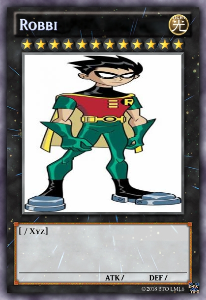
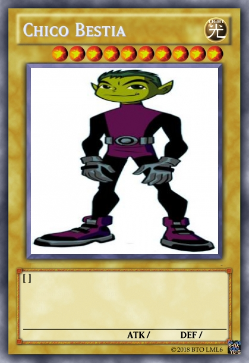
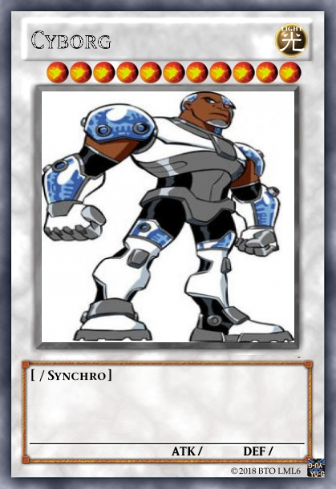
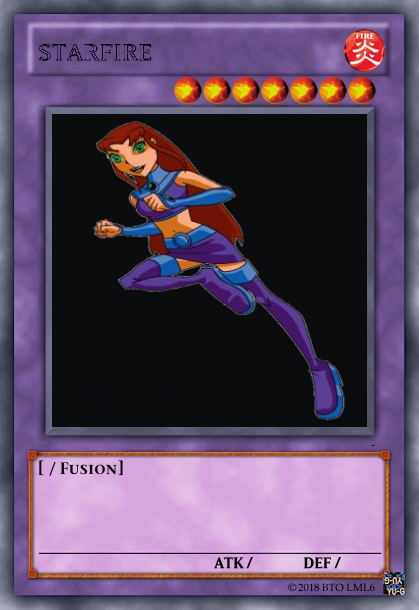
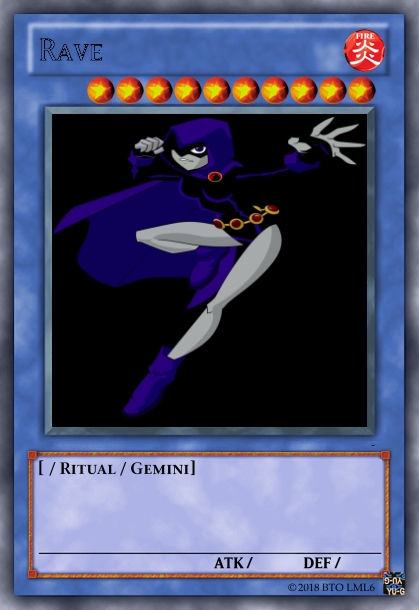
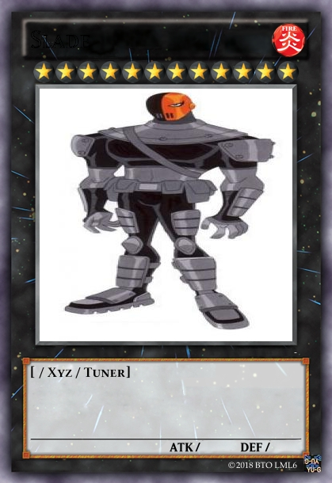

El 19 de enero de 2003, Cartoon Network trasmitió por primera vez la serie en Estados Unidos (en América Latina no fue trasmitida hasta diciembre del mismo año) y está basada en el cómic The New Teen Titans de la era de Marv Wolfman y George Pérez.
El argumento principal, en las dos primeras temporadas, se centró en el villano Slade y su búsqueda por un aprendiz, mientras que la tercera temporada habló de la relación de Cyborg con el villano Hermano Sangre (Brother Blood), que culminó en la creación de los Titans Este. La cuarta temporada fue centrada en una profecía que indicaba que Raven ayudaría a destruir el mundo. La quinta y última temporada se enfoca en la Hermandad del Mal, una organización que intenta capturar jóvenes héroes aliados de viejos enemigos de los Titanes originales y de otros criminales del mundo.
En la serie es común el tono de comedia, a veces un poco cruda (como cuando Starfire grita "¡Alguien tiene los tentáculos en mi grebnaks!", sin conocerse el significado de esta palabra), que junto con la antes mencionada apariencia visual del anime, tiene el propósito de ser diferente a otras caricaturas de superhéroes tradicionales.
El tema principal de los Jóvenes Titanes, es interpretada por el dueto japonés Puffy AmiYumi, alternando entre los episodios la versión en japonés y la versión en inglés. Incluso en un episodio canta el alter ego de Robin (Larry), Robin 3000 y en "Trouble In Tokyo", las voces en inglés cantan ¡A su manera!.
 
 
 